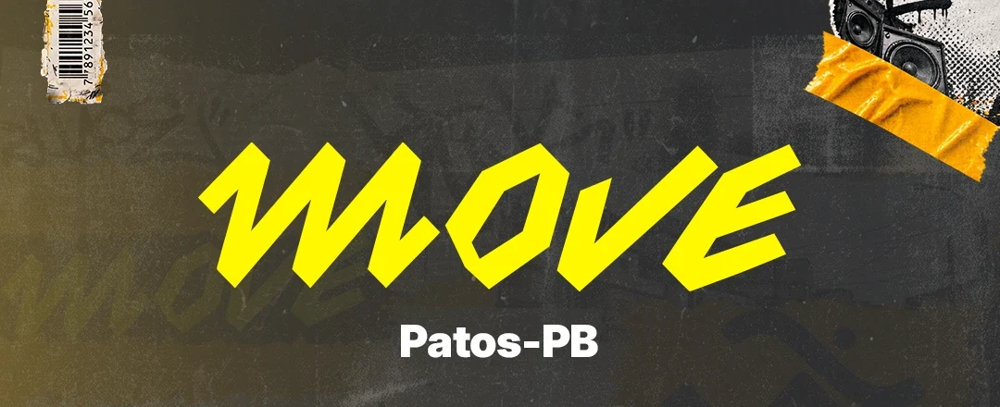

Move Patos-PB
Participe de um VC
Veja os líderes e os bairros
Deslize e toque na foto para ver o VC
Grupo Move
Entre no grupo
Grupo Move A2
Exclusivo para jovens casados
Sirva em algum departamento
Fale pelo WhatsApp
Quero um aconselhamento
Conversa pelo WhatsApp
Verbo da Vida Patos
Instagram da igreja
Como chegar
Maps ou Waze
Redes sociais
VC ·
Líder do VC
Conversar com o líder
Como chegar
Abrir com qual app?
Google Maps
Rota de carro, ônibus ou a pé
Waze
Rota de carro com trânsito